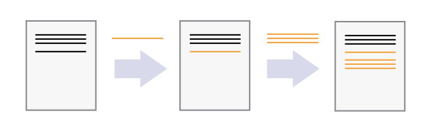

Automated Version Control
Overview
Teaching: 5 min
Exercises: 0 minQuestions
What is version control and why should I use it?
Objectives
Understand the benefits of an automated version control system.
Understand the basics of how automated version control systems work.
We’ll start by exploring how version control can be used to keep track of what one person did and when. Even if you aren’t collaborating with other people, automated version control is much better than this situation:

“Piled Higher and Deeper” by Jorge Cham, http://www.phdcomics.com
We’ve all been in this situation before: it seems ridiculous to have multiple nearly-identical versions of the same document. Some word processors let us deal with this a little better, such as Microsoft Word’s Track Changes, Google Docs’ version history.
Version control systems start with a base version of the document and then record changes you make each step of the way. You can think of it as a recording of your progress: you can rewind to start at the base document and play back each change you made, eventually arriving at your more recent version.

Once you think of changes as separate from the document itself, you can then think about “playing back” different sets of changes on the base document, ultimately resulting in different versions of that document. For example, two users can make independent sets of changes on the same document.

Unless multiple users make changes to the same section of the document - a conflict - you can incorporate two sets of changes into the same base document.

A version control system is a tool that keeps track of these changes for us, effectively creating different versions of our files. It allows us to decide which changes will be made to the next version (each record of these changes is called a commit), and keeps useful metadata about them. The complete history of commits for a particular project and their metadata make up a repository. Repositories can be kept in sync across different computers, facilitating collaboration among different people.
Paper Writing
Imagine you drafted an excellent paragraph for a paper you are writing, but later ruin it. How would you retrieve the excellent version of your conclusion? Is it even possible?
Imagine you have 5 co-authors. How would you manage the changes and comments they make to your paper? If you use LibreOffice Writer or Microsoft Word, what happens if you accept changes made using the
Track Changesoption? Do you have a history of those changes?Solution
Recovering the excellent version is only possible if you created a copy of the old version of the paper. The danger of losing good versions often leads to the problematic workflow illustrated in the PhD Comics cartoon at the top of this page.
Collaborative writing with traditional word processors is cumbersome. Either every collaborator has to work on a document sequentially (slowing down the process of writing), or you have to send out a version to all collaborators and manually merge their comments into your document. The ‘track changes’ or ‘record changes’ option can highlight changes for you and simplifies merging, but as soon as you accept changes you will lose their history. You will then no longer know who suggested that change, why it was suggested, or when it was merged into the rest of the document. Even online word processors like Google Docs or Microsoft Office Online do not fully resolve these problems.
Key Points
Version control is like an unlimited ‘undo’.
Version control also allows many people to work in parallel.
Setting Up and Using Git and Github
Overview
Teaching: 5 min
Exercises: 0 minQuestions
How do I get a Github account?
How do I get set up to use Git on the COLA Computers?
Objectives
Configure
gitUnderstand the meaning of the
--globalconfiguration flag.
Git is a command line version control system that is available by default on most Unix/Linux, Mac computers and can be easily installed for Windows (https://gitforwindows.org/). You can use it on your own computer. In this class, we will be using it on the COLA computers where it is already installed.
When we use Git for the first time, we need to configure a few things. Below are a few examples of configurations we will set as we get started with Git:
- our name and email address,
- and that we want to use these settings globally (i.e. for every project).
On a command line, Git commands are written as git verb options,
where verb is what we actually want to do and options is additional optional information which may be needed for the verb.
First, we can check to see how these options are set by default on the COLA Computers:
$ git config --list"
Here is how Dracula sets up his new laptop:
$ git config --global user.name "Vlad Dracula"
$ git config --global user.email "vlad@tran.sylvan.ia"
Please use your own name and email address instead of Dracula’s. This user name and email will be associated with your subsequent Git activity, which means that any changes pushed to GitHub will include this information.
For these lessons, we will be interacting with GitHub and so the email address used should be the same as the one used when setting up your GitHub account. If you are concerned about privacy, please review GitHub’s instructions for keeping your email address private.
Keeping your email private
If you elect to use a private email address with GitHub, then use that same email address for the
user.emailvalue, e.g.username@users.noreply.github.comreplacingusernamewith your GitHub one.
These commands we just ran above only need to be run once: the flag --global tells Git
to use the settings for every project, in your user account, on this computer.
You can check your settings at any time:
$ git config --list
You can change your configuration anytime you want using the same commands.
Git Help and Manual
Always remember that if you forget a
gitcommand, you can access the list of commands by using-hand access the Git manual by using--help:$ git config -h $ git config --helpWhile viewing the manual, remember the
:is a prompt waiting for commands and you can press Q to exit the manual.
Key Points
Use
git configwith the--globaloption to configure a user name and email address
Creating a Repository
Overview
Teaching: 10 min
Exercises: 0 minQuestions
Where does Git store information?
Objectives
Create a local Git repository.
Describe the purpose of the
.gitdirectory.
Once Git is configured, we can start using it.
We will continue with the story of Wolfman and Dracula who are investigating if it is possible to send a planetary lander to Mars.
 Werewolf vs dracula
by b-maze / Deviant Art.
Mars by European Space Agency /
CC-BY-SA 3.0 IGO.
Pluto /
Courtesy NASA/JPL-Caltech.
Mummy
© Gilad Fried / The Noun Project /
CC BY 3.0.
Moon
© Luc Viatour / https://lucnix.be /
CC BY-SA 3.0.
Werewolf vs dracula
by b-maze / Deviant Art.
Mars by European Space Agency /
CC-BY-SA 3.0 IGO.
Pluto /
Courtesy NASA/JPL-Caltech.
Mummy
© Gilad Fried / The Noun Project /
CC BY 3.0.
Moon
© Luc Viatour / https://lucnix.be /
CC BY-SA 3.0.
{kind=link}
{kind=link}
{kind=link}
{kind=link}
First, let’s create a directory in our home directory for our work and then move into that directory:
$ cd
$ mkdir planets
$ cd planets
Then we tell Git to make planets a repository
– a place where Git can store versions of our files:
$ git init
It is important to note that git init will create a repository that
includes subdirectories and their files—there is no need to create
separate repositories nested within the planets repository, whether
subdirectories are present from the beginning or added later. Also, note
that the creation of the planets directory and its initialization as a
repository are completely separate processes.
If we use ls to show the directory’s contents,
it appears that nothing has changed:
$ ls
But if we add the -a flag to show everything,
we can see that Git has created a hidden directory within planets called .git:
$ ls -a
. .. .git
Git uses this special subdirectory to store all the information about the project,
including all files and sub-directories located within the project’s directory.
If we ever delete the .git subdirectory,
we will lose the project’s history.
We can check that everything is set up correctly by asking Git to tell us the status of our project:
$ git status
On branch master
No commits yet
nothing to commit (create/copy files and use "git add" to track)
If you are using a different version of git, the exact
wording of the output might be slightly different.
Places to Create Git Repositories
Along with tracking information about planets (the project we have already created), Dracula would also like to track information about moons. Despite Wolfman’s concerns, Dracula creates a
moonsproject inside hisplanetsproject with the following sequence of commands:$ cd # return to home directory $ cd planets # go into planets directory, which is already a Git repository $ ls -a # ensure the .git subdirectory is still present in the planets directory $ mkdir moons # make a subdirectory planets/moons $ cd moons # go into moons subdirectory $ git init # make the moons subdirectory a Git repository $ ls -a # ensure the .git subdirectory is present indicating we have created a new Git repositoryIs the
git initcommand, run inside themoonssubdirectory, required for tracking files stored in themoonssubdirectory?Solution
No. Dracula does not need to make the
moonssubdirectory a Git repository because theplanetsrepository will track all files, sub-directories, and subdirectory files under theplanetsdirectory. Thus, in order to track all information about moons, Dracula only needed to add themoonssubdirectory to theplanetsdirectory.Additionally, Git repositories can interfere with each other if they are “nested”: the outer repository will try to version-control the inner repository. Therefore, it’s best to create each new Git repository in a separate directory. To be sure that there is no conflicting repository in the directory, check the output of
git status. If it looks like the following, you are good to go to create a new repository as shown above:$ git statusfatal: Not a git repository (or any of the parent directories): .git
Correcting
git initMistakesWolfman explains to Dracula how a nested repository is redundant and may cause confusion down the road. Dracula would like to remove the nested repository. How can Dracula undo his last
git initin themoonssubdirectory?Solution – USE WITH CAUTION!
Background
Removing files from a git repository needs to be done with caution. To remove files from the working tree and not from your working directory, use
$ rm filenameThe file being removed has to be in sync with the branch head with no updates. If there are updates, the file can be removed by force by using the
-foption. Similarly a directory can be removed from git usingrm -r dirnameorrm -rf dirname.Solution
Git keeps all of its files in the
.gitdirectory. To recover from this little mistake, Dracula can just remove the.gitfolder in the moons subdirectory by running the following command from inside theplanetsdirectory:$ rm -rf moons/.gitBut be careful! Running this command in the wrong directory, will remove the entire Git history of a project you might want to keep. Therefore, always check your current directory using the command
pwd.
Key Points
git initinitializes a repository.Git stores all of its repository data in the
.gitdirectory.
Tracking Changes
Overview
Teaching: 20 min
Exercises: 0 minQuestions
How do I record changes in Git?
How do I check the status of my version control repository?
How do I record notes about what changes I made and why?
Objectives
Go through the modify-add-commit cycle for one or more files.
Explain where information is stored at each stage of that cycle.
Distinguish between descriptive and non-descriptive commit messages.
First let’s make sure we’re still in the right directory.
You should be in the planets directory.
$ cd ~/planets
Let’s create a file called mars.txt that contains some notes
about the Red Planet’s suitability as a base.
We’ll use nano to edit the file;
you can use whatever editor you like.
In particular, this does not have to be the core.editor you set globally earlier. But remember, the bash command to create or edit a new file will depend on the editor you choose (it might not be nano). For a refresher on text editors, check out “Which Editor?” in The Unix Shell lesson.
$ nano mars.txt
Type the text below into the mars.txt file:
Cold and dry, but everything is my favorite color
Let’s first verify that the file was properly created by running the list command (ls):
$ ls
mars.txt
mars.txt contains a single line, which we can see by running:
$ cat mars.txt
Cold and dry, but everything is my favorite color
If we check the status of our project again, Git tells us that it’s noticed the new file:
$ git status
On branch master
No commits yet
Untracked files:
(use "git add <file>..." to include in what will be committed)
mars.txt
nothing added to commit but untracked files present (use "git add" to track)
The “untracked files” message means that there’s a file in the directory
that Git isn’t keeping track of.
We can tell Git to track a file using git add:
$ git add mars.txt
and then check that the right thing happened:
$ git status
On branch master
No commits yet
Changes to be committed:
(use "git rm --cached <file>..." to unstage)
new file: mars.txt
Git now knows that it’s supposed to keep track of mars.txt,
but it hasn’t recorded these changes as a commit yet.
To get it to do that,
we need to run one more command:
$ git commit -m "Start notes on Mars as a base"
[master (root-commit) f22b25e] Start notes on Mars as a base
1 file changed, 1 insertion(+)
create mode 100644 mars.txt
When we run git commit,
Git takes everything we have told it to save by using git add
and stores a copy permanently inside the special .git directory.
This permanent copy is called a commit
(or revision) and its short identifier is f22b25e. Your commit may have another identifier.
We use the -m flag (for “message”)
to record a short, descriptive, and specific comment that will help us remember later on what we did and why.
If we just run git commit without the -m option,
Git will launch nano (or whatever other editor we configured as core.editor)
so that we can write a longer message.
Good commit messages start with a brief (<50 characters) statement about the
changes made in the commit. Generally, the message should complete the sentence “If applied, this commit will”
If we run git status now:
$ git status
On branch master
nothing to commit, working directory clean
it tells us everything is up to date.
If we want to know what we’ve done recently,
we can ask Git to show us the project’s history using git log:
$ git log
commit f22b25e3233b4645dabd0d81e651fe074bd8e73b
Author: Vlad Dracula <vlad@tran.sylvan.ia>
Date: Thu Aug 22 09:51:46 2013 -0400
Start notes on Mars as a base
git log lists all commits made to a repository in reverse chronological order.
The listing for each commit includes
the commit’s full identifier
(which starts with the same characters as
the short identifier printed by the git commit command earlier),
the commit’s author,
when it was created,
and the log message Git was given when the commit was created.
Where Are My Changes?
If we run
lsat this point, we will still see just one file calledmars.txt. That’s because Git saves information about files’ history in the special.gitdirectory mentioned earlier so that our filesystem doesn’t become cluttered (and so that we can’t accidentally edit or delete an old version).
Now suppose Dracula adds more information to the file.
(Again, we’ll edit with nano and then cat the file to show its contents;
you may use a different editor, and don’t need to cat.)
$ nano mars.txt
$ cat mars.txt
Cold and dry, but everything is my favorite color
The two moons may be a problem for Wolfman
When we run git status now,
it tells us that a file it already knows about has been modified:
$ git status
On branch master
Changes not staged for commit:
(use "git add <file>..." to update what will be committed)
(use "git checkout -- <file>..." to discard changes in working directory)
modified: mars.txt
no changes added to commit (use "git add" and/or "git commit -a")
The last line is the key phrase:
“no changes added to commit”.
We have changed this file,
but we haven’t told Git we will want to save those changes
(which we do with git add)
nor have we saved them (which we do with git commit).
So let’s do that now. It is good practice to always review
our changes before saving them. We do this using git diff.
This shows us the differences between the current state
of the file and the most recently saved version:
$ git diff
diff --git a/mars.txt b/mars.txt
index df0654a..315bf3a 100644
--- a/mars.txt
+++ b/mars.txt
@@ -1 +1,2 @@
Cold and dry, but everything is my favorite color
+The two moons may be a problem for Wolfman
The output is cryptic because
it is actually a series of commands for tools like editors and patch
telling them how to reconstruct one file given the other.
If we break it down into pieces:
- The first line tells us that Git is producing output similar to the Unix
diffcommand comparing the old and new versions of the file. - The second line tells exactly which versions of the file
Git is comparing;
df0654aand315bf3aare unique computer-generated labels for those versions. - The third and fourth lines once again show the name of the file being changed.
- The remaining lines are the most interesting, they show us the actual differences
and the lines on which they occur.
In particular,
the
+marker in the first column shows where we added a line.
After reviewing our change, it’s time to commit it:
$ git commit -m "Add concerns about effects of Mars' moons on Wolfman"
$ git status
On branch master
Changes not staged for commit:
(use "git add <file>..." to update what will be committed)
(use "git checkout -- <file>..." to discard changes in working directory)
modified: mars.txt
no changes added to commit (use "git add" and/or "git commit -a")
Whoops:
Git won’t commit because we didn’t use git add first.
Let’s fix that:
$ git add mars.txt
$ git commit -m "Add concerns about effects of Mars' moons on Wolfman"
[master 34961b1] Add concerns about effects of Mars' moons on Wolfman
1 file changed, 1 insertion(+)
Git insists that we add files to the set we want to commit before actually committing anything. This allows us to commit our changes in stages and capture changes in logical portions rather than only large batches. For example, suppose we’re adding a few citations to relevant research to our thesis. We might want to commit those additions, and the corresponding bibliography entries, but not commit some of our work drafting the conclusion (which we haven’t finished yet).
To allow for this, Git has a special staging area where it keeps track of things that have been added to the current changeset but not yet committed.
Staging Area
If you think of Git as taking snapshots of changes over the life of a project,
git addspecifies what will go in a snapshot (putting things in the staging area), andgit committhen actually takes the snapshot, and makes a permanent record of it (as a commit). If you don’t have anything staged when you typegit commit, Git will prompt you to usegit commit -aorgit commit --all, which is kind of like gathering everyone to take a group photo! However, it’s almost always better to explicitly add things to the staging area, because you might commit changes you forgot you made. (Going back to the group photo simile, you might get an extra with incomplete makeup walking on the stage for the picture because you used-a!) Try to stage things manually, or you might find yourself searching for “git undo commit” more than you would like!

Let’s watch as our changes to a file move from our editor to the staging area and into long-term storage. First, we’ll add another line to the file:
$ nano mars.txt
$ cat mars.txt
Cold and dry, but everything is my favorite color
The two moons may be a problem for Wolfman
But the Mummy will appreciate the lack of humidity
$ git diff
diff --git a/mars.txt b/mars.txt
index 315bf3a..b36abfd 100644
--- a/mars.txt
+++ b/mars.txt
@@ -1,2 +1,3 @@
Cold and dry, but everything is my favorite color
The two moons may be a problem for Wolfman
+But the Mummy will appreciate the lack of humidity
So far, so good:
we’ve added one line to the end of the file
(shown with a + in the first column).
Now let’s put that change in the staging area
and see what git diff reports:
$ git add mars.txt
$ git diff
There is no output: as far as Git can tell, there’s no difference between what it’s been asked to save permanently and what’s currently in the directory. However, if we do this:
$ git diff --staged
diff --git a/mars.txt b/mars.txt
index 315bf3a..b36abfd 100644
--- a/mars.txt
+++ b/mars.txt
@@ -1,2 +1,3 @@
Cold and dry, but everything is my favorite color
The two moons may be a problem for Wolfman
+But the Mummy will appreciate the lack of humidity
it shows us the difference between the last committed change and what’s in the staging area. Let’s save our changes:
$ git commit -m "Discuss concerns about Mars' climate for Mummy"
[master 005937f] Discuss concerns about Mars' climate for Mummy
1 file changed, 1 insertion(+)
check our status:
$ git status
On branch master
nothing to commit, working directory clean
and look at the history of what we’ve done so far:
$ git log
commit 005937fbe2a98fb83f0ade869025dc2636b4dad5
Author: Vlad Dracula <vlad@tran.sylvan.ia>
Date: Thu Aug 22 10:14:07 2013 -0400
Discuss concerns about Mars' climate for Mummy
commit 34961b159c27df3b475cfe4415d94a6d1fcd064d
Author: Vlad Dracula <vlad@tran.sylvan.ia>
Date: Thu Aug 22 10:07:21 2013 -0400
Add concerns about effects of Mars' moons on Wolfman
commit f22b25e3233b4645dabd0d81e651fe074bd8e73b
Author: Vlad Dracula <vlad@tran.sylvan.ia>
Date: Thu Aug 22 09:51:46 2013 -0400
Start notes on Mars as a base
Directories
Two important facts you should know about directories in Git.
Git does not track directories on their own, only files within them. Try it for yourself:
$ mkdir spaceships $ git status $ git add spaceships $ git statusIf you create a directory in your Git repository and populate it with files, you can add all files in the directory at once by:
git add <directory-with-files>Try it for yourself:
$ touch spaceships/apollo-11 spaceships/sputnik-1 $ git status $ git add spaceships $ git statusBefore moving on, we will commit these changes.
$ git commit -m "Add some initial thoughts on spaceships"
To recap, when we want to add changes to our repository,
we first need to add the changed files to the staging area
(git add) and then commit the staged changes to the
repository (git commit):

Committing Changes to Git
Which command(s) below would save the changes of
myfile.txtto my local Git repository?
$ git commit -m "my recent changes"$ git init myfile.txt $ git commit -m "my recent changes"$ git add myfile.txt $ git commit -m "my recent changes"$ git commit -m myfile.txt "my recent changes"Solution
- Would only create a commit if files have already been staged.
- Would try to create a new repository.
- Is correct: first add the file to the staging area, then commit.
- Would try to commit a file “my recent changes” with the message myfile.txt.
bioRepository
- Create a new Git repository on your computer called
bio.- Write a three-line biography for yourself in a file called
me.txt, commit your changes- Modify one line, add a fourth line
- Display the differences between its updated state and its original state.
Solution
If needed, move out of the
planetsfolder:$ cd ..Create a new folder called
bioand ‘move’ into it:$ mkdir bio $ cd bioInitialise git:
$ git initCreate your biography file
me.txtusingnanoor another text editor. Once in place, add and commit it to the repository:$ git add me.txt $ git commit -m "Add biography file"Modify the file as described (modify one line, add a fourth line). To display the differences between its updated state and its original state, use
git diff:$ git diff me.txt
Key Points
git statusshows the status of a repository.Files can be stored in a project’s working directory (which users see), the staging area (where the next commit is being built up) and the local repository (where commits are permanently recorded).
git addputs files in the staging area.
git commitsaves the staged content as a new commit in the local repository.Write a commit message that accurately describes your changes.
Remotes in GitHub
Overview
Teaching: 30 min
Exercises: 0 minQuestions
How do I share my changes with others on the web?
Objectives
Explain what remote repositories are and why they are useful.
Push to or pull from a remote repository.
Version control really comes into its own when we begin to collaborate with other people. We already have most of the machinery we need to do this; the only thing missing is to copy changes from one repository to another.
Systems like Git allow us to move work between any two repositories. In practice, though, it’s easiest to use one copy as a central hub, and to keep it on the web rather than on someone’s laptop. Most programmers use hosting services like GitHub, Bitbucket or GitLab to hold those master copies; we’ll explore the pros and cons of this in the final section of this lesson.
Let’s start by sharing the changes we’ve made to our current project with the
world. Log in to GitHub, then click on the icon in the top right corner to
create a new repository called planets:

Name your repository “planets” and then click “Create Repository”.
Note: Since this repository will be connected to a local repository, it needs to be empty. Leave “Initialize this repository with a README” unchecked, and keep “None” as options for both “Add .gitignore” and “Add a license.” See the “GitHub License and README files” exercise below for a full explanation of why the repository needs to be empty.

As soon as the repository is created, GitHub displays a page with a URL and some information on how to configure your local repository:

This effectively does the following on GitHub’s servers:
$ mkdir planets
$ cd planets
$ git init
If you remember back to the earlier lesson where we added and
committed our earlier work on mars.txt, we had a diagram of the local repository
which looked like this:
Now that we have two repositories, we need a diagram like this:

Note that our local repository still contains our earlier work on mars.txt, but the
remote repository on GitHub appears empty as it doesn’t contain any files yet.
The next step is to connect the two repositories. We do this by making the GitHub repository a remote for the local repository. The home page of the repository on GitHub includes the string we need to identify it:

Copy that URL from the browser, go into the local planets repository, and run
this command:
$ git remote add origin https://github.com/vlad/planets.git
Make sure to use the URL for your repository rather than Vlad’s: the only
difference should be your username instead of vlad.
origin is a local name used to refer to the remote repository. It could be called
anything, but origin is a convention that is often used by default in git
and GitHub, so it’s helpful to stick with this unless there’s a reason not to.
We can check that the command has worked by running git remote -v:
$ git remote -v
origin https://github.com/vlad/planets.git (push)
origin https://github.com/vlad/planets.git (fetch)
Once the remote is set up, this command will push the changes from our local repository to the repository on GitHub:
$ git push origin master
Enumerating objects: 16, done.
Counting objects: 100% (16/16), done.
Delta compression using up to 8 threads.
Compressing objects: 100% (11/11), done.
Writing objects: 100% (16/16), 1.45 KiB | 372.00 KiB/s, done.
Total 16 (delta 2), reused 0 (delta 0)
remote: Resolving deltas: 100% (2/2), done.
To https://github.com/vlad/planets.git
* [new branch] master -> master
Our local and remote repositories are now in this state:

We can pull changes from the remote repository to the local one as well:
$ git pull origin master
From https://github.com/vlad/planets
* branch master -> FETCH_HEAD
Already up-to-date.
Pulling has no effect in this case because the two repositories are already synchronized. If someone else had pushed some changes to the repository on GitHub, though, this command would download them to our local repository.
Push vs. Commit
In this lesson, we introduced the “git push” command. How is “git push” different from “git commit”?
Solution
When we push changes, we’re interacting with a remote repository to update it with the changes we’ve made locally (often this corresponds to sharing the changes we’ve made with others). Commit only updates your local repository.
Key Points
A local Git repository can be connected to one or more remote repositories.
git pushcopies changes from a local repository to a remote repository.
git pullcopies changes from a remote repository to a local repository.